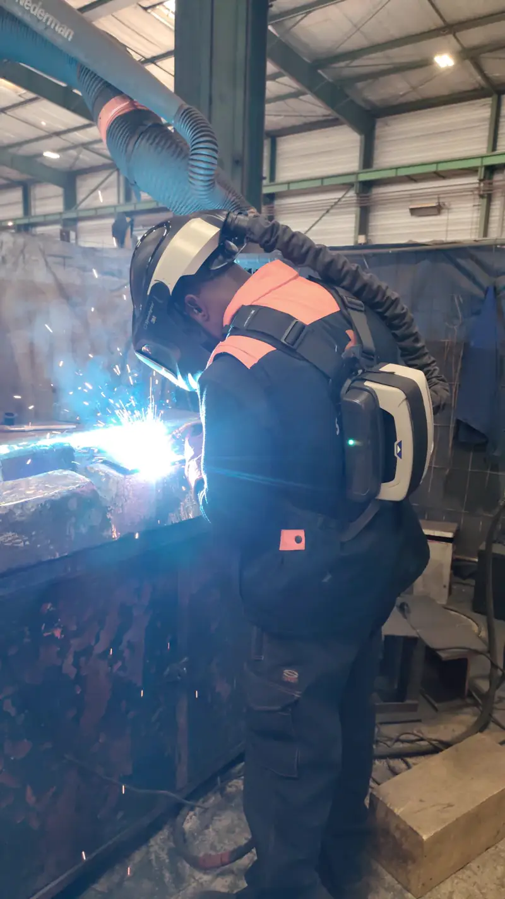

Para serralharias e metalomecânicas
Está a recusar obras por falta de soldadores?
Cada obra recusada vai parar à concorrência. A SOUZA põe técnicos experientes na sua oficina para dar conta do trabalho que já tem.
O Fábio responde durante o dia de trabalho.
- TIG, MIG/MAG e elétrodo
- Aço ao carbono e inox
- Portugal e Espanha

Em 40 segundos
Veja como a SOUZA entra na sua oficina.
Do pedido de orçamento que não consegue aceitar ao técnico a soldar na sua obra. Com som.
Galeria de obras
Veja o trabalho antes de falar connosco.
18 fotografias de obras reais das equipas SOUZA. Filtre pelo tipo de trabalho que procura e toque para ampliar.
Perfis técnicos
Quem entra na sua oficina.
Técnicos com experiência comprovada em ambiente industrial, que leem desenhos técnicos e trabalham com as suas normas.
Soldadores
MIG/MAG, TIG e elétrodo revestido. Estruturas, tubagem, preparação de juntas e chanfros, em aço ao carbono e inox.
Serralheiros e montadores
Montagem de estruturas em oficina ou em obra: alinhamento, nivelamento e trabalho em altura com certificação.
Caldeireiros
Traçagem e desenvolvimento de peças, corte, conformação e montagem de estruturas e bastidores.
Tubistas
Tubagem industrial: leitura de isométricos, traçagem, corte, ajuste, suportes e preparação para soldadura.
Polidores de inox
Acabamentos sanitários para alimentar e farmacêutica: polimento de equipamentos, depósitos e tanques.
Pintores industriais
Pintura de estruturas e equipamentos metálicos, para fechar a obra com a mesma equipa.
O padrão SOUZA
O mesmo nível em todos os técnicos.
- Experiência comprovada
- Historial em ambientes industriais de alta responsabilidade.
- Competência técnica
- Interpretação de desenhos técnicos complexos.
- Cultura de segurança
- Cumprimento estrito das normas de segurança e prevenção de riscos.
- Disciplina operacional
- Integração rápida e respeitosa nas equipas que já existem.
Perguntas
O que as serralharias nos perguntam.
Quanto custa?
Depende dos perfis, do número de técnicos, do local e da duração. O Fábio faz-lhe uma proposta pelo WhatsApp depois de perceber o trabalho.
É só para picos de trabalho?
É para quando a sua equipa não chega: um pico de encomendas, uma obra com prazo apertado ou um trabalho fora da oficina.
Trabalham onde?
Em Portugal e em Espanha. A sede é em Lourosa, Santa Maria da Feira.
Os técnicos cumprem as nossas regras?
Sim. Adaptam-se às normas de segurança, qualidade e procedimentos internos do cliente desde o primeiro dia.
Como peço?
Carregue no botão do WhatsApp e diga que perfis precisa, onde e quando. Também pode ligar para +351 916 868 318.